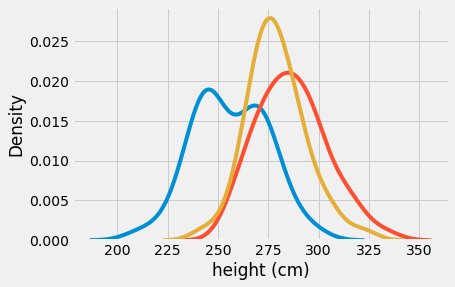
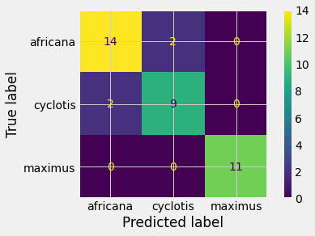

Table of Contents
import numpy as np
import pandas as pd
from scipy import stats
from sklearn.naive_bayes import MultinomialNB, GaussianNB
# There is also a BernoulliNB for a dataset with binary predictors
import seaborn as sns
from matplotlib import pyplot as plt
from sklearn.model_selection import train_test_split
from sklearn.metrics import plot_confusion_matrix
from sklearn.preprocessing import OneHotEncoder
%matplotlib inline
Objectives#
Describe how Bayes’s Theorem can be used to make predictions of a target
Identify the appropriate variant of Naive Bayes models for a particular business problem
Motivating The Bayesian Classifier 🧐#
Let’s take a second to go through an example to get a feel for how Bayes’ Theorem can help us with classification. Specifically about document classification
Spam, Spam, Spam, Spam, Spam…
This is the classic example: detecting email spam!
The Problem Setup
We get emails that can be either emails we care about (ham 🐷) or emails we don’t care about (spam 🥫).
We can probably look at the words in the email and get an idea of whether they are spam or not just by observing if they contain red-flag words 🚩
We won’t always be right, but if we see an email that uses word(s) that are more often associated with spam, then we can feel more confident as labeling that email as spam!
Naive Bayes Setup#
What we gotta do:
Look at spam and not spam (ham) emails
Identify words that suggest classification
Determine probability that words occur in each classification
Profit (classify new emails as “spam” or “ham”)
What’s So Great About This?#
We can keep updating our belief based on the emails we detect
Relatively simple
Can expand to multiple words
The Naive Assumption#
\(P(A,B) = P(A\cap B) = P(A)\ P(B)\) only if independent
In practice, makes sense & is usually pretty good assumption
The Formula#
Let’s say the word that occurs is “cash”:
What Parts Can We Find?#
\(P("cash")\)
That’s just the probability of finding the word “cash”! Frequency of the word!
\(P(🥫)\)
Well, we start with some data (prior knowledge). So frequency of the spam occurring!
\(P("cash" | 🥫)\)
How frequently is “cash” used in a known spam emails. Count the frequency across all spam emails
Calculating That Our Email Is Spam#
# Let's just say 2% of all emails have the word "cash" in them
p_cash = 0.02
# We normally would measure this from our data, but we'll take
# it that 10% of all emails we collected were spam
p_spam = 0.10
# 12% of all spam emails have the word "cash"
p_cash_given_its_spam = 0.12
p_spam_given_cash = p_cash_given_its_spam * p_spam / p_cash
print(f'If the email has the word "cash" in it, there is a {p_spam_given_cash*100}% chance the email is spam')
If the email has the word "cash" in it, there is a 60.0% chance the email is spam
Check it: Does this make sense?
Extending It With Multiple Words#
With more words, the more certain we can be if it is/isn’t spam
Spam:
But because of independence:
Normalize by dividing!
Note: If we wanted to find the most probable class (especially useful for multiclass), we find the maximum numerator for the given criteria
Naive Bayes Modeling Example#
Using Bayes’s Theorem for Classification#
Let’s recall Bayes’s Theorem:
\(\large P(h|e) = \frac{P(h)P(e|h)}{P(e)}\)
Does this look like a classification problem?#
Suppose we have three competing hypotheses \(\{h_1, h_2, h_3\}\) that would explain our evidence \(e\).
Then we could use Bayes’s Theorem to calculate the posterior probabilities for each of these three:
\(P(h_1|e) = \frac{P(h_1)P(e|h_1)}{P(e)}\)
\(P(h_2|e) = \frac{P(h_2)P(e|h_2)}{P(e)}\)
\(P(h_3|e) = \frac{P(h_3)P(e|h_3)}{P(e)}\)
Suppose the evidence is a collection of elephant weights.
Suppose each of the three hypotheses claims that the elephant whose measurements we have belongs to one of the three extant elephant species (L. africana, L. cyclotis, and E. maximus).
In that case the left-hand sides of these equations represent the probability that the elephant in question belongs to a given species.
If we think of the species as our target, then this is just an ordinary classification problem.
What about the right-hand sides of the equations? These other probabilities we can calculate from our dataset.
The priors can simply be taken to be the percentages of the different classes in the dataset.
What about the likelihoods?
If the relevant features are categorical, we can simply count the numbers of each category in the dataset. For example, if the features are whether the elephant has tusks or not, then, to calculate the likelihoods, we’ll just count the tusked and non-tuksed elephants per species.
If the relevant features are numerical, we’ll have to do something else. A good way of proceeding is to rely on (presumed) underlying distributions of the data. Here is an example of using the normal distribution to calculate likelihoods. We’ll follow this idea below for our elephant data.
Elephant Example#
Suppose we have a dataset that looks like this:
elephs = pd.read_csv('data/elephants.csv', usecols=['height (cm)',
'species'])
elephs.head()
| height (cm) | species | |
|---|---|---|
| 0 | 231.683867 | maximus |
| 1 | 277.714843 | cyclotis |
| 2 | 268.228131 | africana |
| 3 | 267.334322 | cyclotis |
| 4 | 270.165582 | maximus |
plt.style.use('fivethirtyeight')
fig, ax = plt.subplots()
sns.kdeplot(data=elephs[elephs['species'] == 'maximus']['height (cm)'],
ax=ax, label='maximus')
sns.kdeplot(data=elephs[elephs['species'] == 'africana']['height (cm)'],
ax=ax, label='africana')
sns.kdeplot(data=elephs[elephs['species'] == 'cyclotis']['height (cm)'],
ax=ax, label='cyclotis');

Naive Bayes by Hand#
Suppose we want to make prediction of species for some new elephant whose weight we’ve just recorded. We’ll suppose the new elephant has:
new_ht = 263
What we want to calculate is the mean and standard deviation for height for each elephant species. We’ll use these to calculate the relevant likelihoods.
So:
max_stats = elephs[elephs['species'] == 'maximus'].describe().loc[['mean', 'std'], :]
max_stats
| height (cm) | |
|---|---|
| mean | 256.143764 |
| std | 18.270532 |
cyc_stats = elephs[elephs['species'] == 'cyclotis'].describe().loc[['mean', 'std'], :]
cyc_stats
| height (cm) | |
|---|---|
| mean | 278.993125 |
| std | 14.669292 |
afr_stats = elephs[elephs['species'] == 'africana'].describe().loc[['mean', 'std'], :]
afr_stats
| height (cm) | |
|---|---|
| mean | 286.642016 |
| std | 17.127223 |
elephs['species'].value_counts()
cyclotis 50
africana 50
maximus 50
Name: species, dtype: int64
Calculation of Likelihoods#
We’ll use the PDFs of the normal distributions with the discovered means and standard deviations to calculate likelihoods:
stats.norm(loc=max_stats['height (cm)'][0],
scale=max_stats['height (cm)'][1]).pdf(263)
0.020350724281546377
stats.norm(loc=cyc_stats['height (cm)'][0],
scale=cyc_stats['height (cm)'][1]).pdf(263)
0.015010397188804914
stats.norm(loc=afr_stats['height (cm)'][0],
scale=afr_stats['height (cm)'][1]).pdf(263)
0.008983844678436815
Posteriors#
What we have just calculated are the likelihoods, i.e.:
\(P(height=263 | species=maximus) = 2.04\%\)
\(P(height=263 | species=cyclotis) = 1.50\%\)
\(P(height=263 | species=africana) = 0.90\%\)
(Notice that they do NOT sum to 1!) But what we’d really like to know are the posteriors. I.e. what are:
\(P(species=maximus | height=263)\)?
\(P(species=cyclotis | height=263)\)?
\(P(species=africana | height=263)\)?
Since we have equal numbers of each species, every prior is equal to \(\frac{1}{3}\). Thus we can calculate the probability of the evidence:
\(P(height=263) = \frac{1}{3}(0.0204 + 0.0150 + 0.0090) = 0.0148\)
And therefore calculate the posteriors using Bayes’s Theorem:
\(P(species=maximus | height=263) = \frac{1}{3}\frac{0.0204}{0.0148} = 45.9\%\);
\(P(species=cyclotis | height=263) = \frac{1}{3}\frac{0.0150}{0.0148} = 33.8\%\);
\(P(species=africana | height=263) = \frac{1}{3}\frac{0.0090}{0.0148} = 20.3\%\).
Bayes’s Theorem shows us that the largest posterior belongs to the maximus species. (Note also that, since the priors are all the same, the largest posterior will necessarily belong to the species with the largest likelihood!)
Therefore, the maximus species will be our prediction for an elephant of this height.
More Dimensions#
In fact, we also have elephant weight data available in addition to their heights. To accommodate multiple features we can make use of multivariate normal distributions.

What’s “Naive” about This?#
For multiple predictors, we make the simplifying assumption that our predictors are probablistically independent. This will often be unrealistic, but it simplifies our calculations a great deal.
elephants = pd.read_csv('data/elephants.csv',
usecols=['height (cm)', 'weight (lbs)', 'species'])
elephants.head()
| height (cm) | weight (lbs) | species | |
|---|---|---|---|
| 0 | 231.683867 | 6469.491895 | maximus |
| 1 | 277.714843 | 7639.806953 | cyclotis |
| 2 | 268.228131 | 8561.517693 | africana |
| 3 | 267.334322 | 7673.608014 | cyclotis |
| 4 | 270.165582 | 7259.901759 | maximus |
maximus = elephants[elephants['species'] == 'maximus']
cyclotis = elephants[elephants['species'] == 'cyclotis']
africana = elephants[elephants['species'] == 'africana']
Suppose our new elephant with a height of 263 cm also has a weight of 7009 lbs.
likeli_max = stats.multivariate_normal(mean=maximus.mean(),
cov=maximus.cov()).pdf([263, 7009])
likeli_max
1.0464392596305256e-05
likeli_cyc = stats.multivariate_normal(mean=cyclotis.mean(),
cov=cyclotis.cov()).pdf([263, 7009])
likeli_cyc
5.811801818372359e-07
likeli_afr = stats.multivariate_normal(mean=africana.mean(),
cov=africana.cov()).pdf([263, 7009])
likeli_afr
4.391536207783408e-08
Posteriors#
post_max = likeli_max / sum([likeli_max, likeli_cyc, likeli_afr])
post_cyc = likeli_cyc / sum([likeli_max, likeli_cyc, likeli_afr])
post_afr = likeli_afr / sum([likeli_max, likeli_cyc, likeli_afr])
print(post_max)
print(post_cyc)
print(post_afr)
0.943631704546586
0.05240820626601878
0.0039600891873952234
GaussianNB#
gnb = GaussianNB(priors=[1/3, 1/3, 1/3])
X = elephants.drop('species', axis=1)
y = elephants['species']
X_train, X_test, y_train, y_test = train_test_split(X, y, random_state=42)
gnb.fit(X_train, y_train)
GaussianNB(priors=[0.3333333333333333, 0.3333333333333333, 0.3333333333333333])
gnb.predict_proba(np.array([263, 7009]).reshape(1, -1))
array([[0.00425713, 0.04799459, 0.94774828]])
gnb.score(X_test, y_test)
0.8947368421052632
plot_confusion_matrix(gnb, X_test, y_test);

Comma Survey Example#
commas = pd.read_csv('data/comma-survey.csv')
commas.head()
| RespondentID | In your opinion, which sentence is more gramatically correct? | Prior to reading about it above, had you heard of the serial (or Oxford) comma? | How much, if at all, do you care about the use (or lack thereof) of the serial (or Oxford) comma in grammar? | How would you write the following sentence? | When faced with using the word "data", have you ever spent time considering if the word was a singular or plural noun? | How much, if at all, do you care about the debate over the use of the word "data" as a singluar or plural noun? | In your opinion, how important or unimportant is proper use of grammar? | Gender | Age | Household Income | Education | Location (Census Region) | |
|---|---|---|---|---|---|---|---|---|---|---|---|---|---|
| 0 | 3292953864 | It's important for a person to be honest, kind... | Yes | Some | Some experts say it's important to drink milk,... | No | Not much | Somewhat important | Male | 30-44 | $50,000 - $99,999 | Bachelor degree | South Atlantic |
| 1 | 3292950324 | It's important for a person to be honest, kind... | No | Not much | Some experts say it's important to drink milk,... | No | Not much | Somewhat unimportant | Male | 30-44 | $50,000 - $99,999 | Graduate degree | Mountain |
| 2 | 3292942669 | It's important for a person to be honest, kind... | Yes | Some | Some experts say it's important to drink milk,... | Yes | Not at all | Very important | Male | 30-44 | NaN | NaN | East North Central |
| 3 | 3292932796 | It's important for a person to be honest, kind... | Yes | Some | Some experts say it's important to drink milk,... | No | Some | Somewhat important | Male | 18-29 | NaN | Less than high school degree | Middle Atlantic |
| 4 | 3292932522 | It's important for a person to be honest, kind... | No | Not much | Some experts say it's important to drink milk,... | No | Not much | NaN | NaN | NaN | NaN | NaN | NaN |
The first question on the survey was about the Oxford comma.
commas.isna().sum().sum()
924
We’ll go ahead and drop the NaNs:
commas = commas.dropna()
commas.shape
(825, 13)
commas['In your opinion, which sentence is more gramatically correct?'].value_counts()
It's important for a person to be honest, kind, and loyal. 470
It's important for a person to be honest, kind and loyal. 355
Name: In your opinion, which sentence is more gramatically correct?, dtype: int64
Personally, I like the Oxford comma, since it can help eliminate ambiguities, such as:
“This book is dedicated to my parents, Ayn Rand, and God”
vs.
“This book is dedicated to my parents, Ayn Rand and God”
Let’s see how a Naive Bayes model would make a prediction here. We’ll think of the comma preference as our target.
commas['Age'].value_counts()
45-60 248
30-44 205
> 60 199
18-29 173
Name: Age, dtype: int64
Suppose we want to make a prediction about Oxford comma usage for a new person who falls into the 45-60 age group.
Calculating Priors and Likelihoods#
The following code makes a table of values that count up the number of survey respondents who fall into each of eight bins (the four age groups and the two answers to the first comma question).
table = np.zeros((2, 4))
for idx, value in enumerate(commas['Age'].value_counts().index):
table[0, idx] = len(commas[(commas['In your opinion, which sentence is '\
'more gramatically correct?'] ==\
'It\'s important for a person to be '\
'honest, kind, and loyal.') & (commas['Age'] == value)])
table[1, idx] = len(commas[(commas['In your opinion, which sentence is '\
'more gramatically correct?'] ==\
'It\'s important for a person to be '\
'honest, kind and loyal.') & (commas['Age'] == value)])
table
array([[123., 121., 90., 136.],
[125., 84., 109., 37.]])
df = pd.DataFrame(table, columns=['Age45-60',
'Age>60',
'Age30-44',
'Age18-29'])
df
| Age45-60 | Age>60 | Age30-44 | Age18-29 | |
|---|---|---|---|---|
| 0 | 123.0 | 121.0 | 90.0 | 136.0 |
| 1 | 125.0 | 84.0 | 109.0 | 37.0 |
df['Oxford'] = [True, False]
df = df[['Age>60', 'Age45-60', 'Age30-44', 'Age18-29', 'Oxford']]
df
| Age>60 | Age45-60 | Age30-44 | Age18-29 | Oxford | |
|---|---|---|---|---|---|
| 0 | 121.0 | 123.0 | 90.0 | 136.0 | True |
| 1 | 84.0 | 125.0 | 109.0 | 37.0 | False |
Since all we have is a single categorical feature here we can just read our likelihoods and priors right off of this table:
Likelihoods:
Age45-60:
P(Age45-60 | Oxford=True) = \(\frac{123}{470} = 0.2617\);
P(Age45-60 | Oxford=False) = \(\frac{125}{355} = 0.3521\).
Priors:
P(Oxford=True) = \(\frac{470}{825} = 0.5697\);
P(Oxford=False) = \(\frac{355}{825} = 0.4303\).
Calculating Posteriors#
First we’ll calculate the probability of the evidence:
(123+125)/825
0.3006060606060606
Now use Bayes’s Theorem to calculate the posteriors:
Close! But our prediction for someone in the 45-60 age group will be that they do not favor the Oxford comma.
Comparison with MultinomialNB#
comma_model = MultinomialNB()
ohe = OneHotEncoder()
ohe.fit(commas['Age'].values.reshape(-1, 1))
X = ohe.transform(commas['Age'].values.reshape(-1, 1)).todense()
y = commas['In your opinion, which sentence is more gramatically correct?']
comma_model.fit(X, y)
MultinomialNB()
comma_model.predict_proba(np.array([0, 0, 1, 0]).reshape(1, -1))
array([[0.50331754, 0.49668246]])